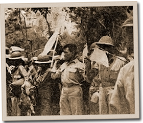

|
j
a v a s c r i p t |
April 14, 1942
General Masaharu Homma is head of Japanese forces here according to the Tribune. A picture shows him looking like a younger Yamashita type, very much alive despite numerous rumors of his demise. There's a picture too of our soldiers with their arms raised in surrender.

Surrendering
"The Filipino soldiers captured also present a very sad and horrible sight. Whereas American soldiers look healthy and vigorous as though they have not been at the front. Filipino soldiers on the other hand look very hungry and some of them are almost dying due to starvation. It was also learned from the captives that American soldiers killed many civilian evacuees, running them over in their cars on the streets and highways when the Americans were retreating from the front to escape to Corregidor." Yesterday, many saw prisoners marching up Taft Avenue, and reported that several people nearby started to whistle "God Bless America." The soldiers smiled broadly and made covert 'Victory' signs with their fingers. Vargas named Benigno Aquino head of the committee to organize the Japanese victory parade. Members included Mayor Guinto, Vicente Madrigal, Alejandro Roces Sr., Dr. Hilario Lara, L.R. Aguinaldo, and Arsenio Luz. Everyone here agrees they'll attend the parade only if American prisoners march, otherwise no. One Filipino working for the Japanese asked me if our store planned a float. He arched his eyebrows when I answered with an emphatic "No!" |
|
|
|
|